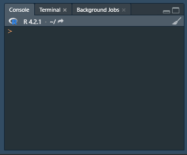
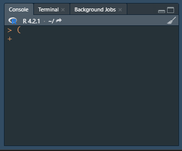

Basics
Annotation
Let’s get started in R. Before we write any code, we should discuss the importance of annotation. When you are writing code it might seem clear to you what each line does, but if someone else reads your code or you look back at your code after a while, it might not seem so clear anymore. To allow others and your future-self to efficiently check, read, and re-use your code, it is important to extensively annotate your code. Let’s see some unannotated code (you don’t have to understand now what the code means):
iris %>%
filter(Species == "setosa") %>%
extract2("Sepal.Length") %>%
is_greater_than(5) %>%
table() %>%
prop.table() %>%
extract2(TRUE) %>%
`*`(100) %>%
paste0(., "%")In this section of code, there is a lot that happens (although some R users might still get the gist of the code). Moreover, a single section of code might quickly get much longer and more complicated than the above example. So let’s see how we can increase this code’s clarity with annotation:
# Calculate proportion of setosa observations with sepal length above 5
iris %>%
# Keep only setosa species
filter(Species == "setosa") %>%
# Keep only the sepal length values
extract2("Sepal.Length") %>%
# Determine whether each value is greater than 5 or not
is_greater_than(5) %>%
# Count lengths above and below 5
table() %>%
# Turn counts into proportions
prop.table() %>%
# Keep only proportion for lengths above 5
extract2(TRUE) %>%
# Multiply by 100
`*`(100) %>%
# Add percentage sign
paste0(., "%")It is true that annotation increases the length of a script, but it is important to note that the quality of a script is not affected by its length, but it is by its clarity.
You can use annotation for more than just explaining what your code does. You can add information on the general purpose of a script, its author, its creation date. You can add information on why you made a certain decision or add a URL to where you found the solution to a coding problem. It is easy to annotate too little, but difficult to annotate too much.
Basic mathematic operators and running code
Now let’s (finally) see some real code! Let’s start with some basic operators:
However, all this code is useless if we do not actually run it. To run a section of code, put your cursor in the code section (can be anywhere) and press ctrl + enter to run the code. If you want to run a specific part of the code, instead of a whole section, you can select the part you want to run and then use ctrl + enter again, to run only the selected part.
The results of the selected code can be found in the console. If the code takes some time, you can see it is done when a new line of the console starts with >.
If you select a specific part of code to run, make sure to be encompassing! For instance, if you forget to select an enclosing paranthesis, the selected code will be put in the console, but it will not be run. You can see that this happened if a new line in the console starts with +.

